Если несколько элементов веб-страницы расположены близко друг к другу, то у пользователей возникает такое ощущение, что у этих элементов есть что-то общее. Группировка элементов помогает пользователю понять их взаимосвязь благодаря оценке расстояния между ними. Если бы все элементы были бы расположены на одинаковом расстоянии друг от друга, пользователю сложно было бы, просматривая страницу, узнать о том, какие из них связаны друг с другом, а какие — нет.
Эта статья посвящена всему, что нужно знать о настройке расстояний между элементами и о настройке внутренних пространств элементов. В частности, речь пойдёт о том, в каких ситуациях стоит использовать внутренние отступы (padding), а в каких — внешние (margin).
Расстояния между элементами и их частями, настраиваемые средствами CSS, бывают двух видов. Они, по отношению к элементу, делятся на внутренние и внешние. Представим, что у нас имеется элемент. Если внутри него имеется некое расстояние между какими-то его частями, то это — внутренний отступ. Если же речь идёт о расстоянии между отдельными элементами — то это внешний отступ.
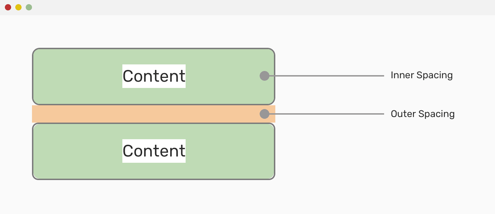
Внутреннее пространство и внешнее пространство
В CSS расстояние между элементами и их составными частями можно настраивать так:
.element {
padding: 1rem;
margin-bottom: 1rem;
}
Свойство padding использовано здесь для настройки внутреннего отступа, а свойство margin — для настройки внешнего отступа. Всё очень просто. Правда? Но настройка расстояний в CSS может серьёзно усложниться в том случае, если работают с компонентами, имеющими множество мелких составных частей и дочерних элементов.
Свойство margin используется для настройки расстояния между отдельными элементами. Например, в предыдущем примере использовано CSS-свойство margin-bottom: 1rem для добавления вертикального расстояния между двумя элементами, расположенными друг над другом.
Внешний отступ можно настраивать для четырёх сторон элемента (top, right, bottom, left — верхней, правой, нижней, левой). Поэтому, прежде чем переходить к примерам и к обсуждениям разных способов настройки расстояний, важно пролить свет на некоторые базовые концепции.
Если описать понятие «схлопывание внешних отступов» простыми словами, то можно сказать, что это происходит в том случае, если два элемента, расположенных друг над другом, имеют внешние отступы, и при этом отступ одного из них больше, чем отступ другого. В таком случае будет использован больший отступ, а меньший будет проигнорирован.
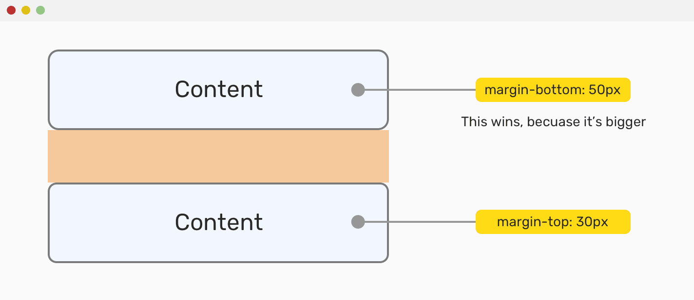
Побеждает больший отступ
На вышеприведённой схеме у верхнего элемента настроено свойство margin-bottom, а у нижнего — свойство margin-top. Вертикальное расстояние между элементами соответствует большему из этих отступов.
Для того чтобы избежать этой проблемы, рекомендуется настраивать во всех элементах одни и те же отступы (как описано здесь). И вот ещё один интересный факт. Ресурс CSS Tricks устроил голосование по поводу использования свойств margin-bottom и margin-top. Как оказалось, свойство margin-bottom победило, взяв 61% голосов.
Вот как решается эта проблема:
.element:not(:last-child) {
margin-bottom: 1rem;
}
Использование CSS-селектора :not позволяет легко удалить внешний отступ у последнего дочернего элемента для того чтобы избавиться от ненужного пространства между элементами.
→ Вот демонстрация работы с внешними отступами
Ещё один пример, связанный со схлопыванием внешних отступов, связан с дочерними и родительскими элементами. Предположим, имеется следующий HTML-код:
<div class="parent">
<div class="child">I'm the child element</div>
</div>
Вот его стили:
.parent {
margin: 50px auto 0 auto;
width: 400px;
height: 120px;
}
.child {
margin: 50px 0;
}
Вот как выглядит результат визуализации всего этого.
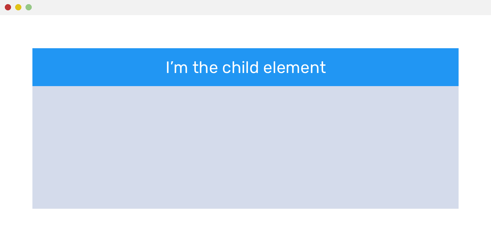
Дочерний и родительский элементы
Обратите внимание на то, что дочерний элемент упирается в верхнюю часть родительского элемента. Это — результат схлопывания их внешних отступов. По данным W3C, есть несколько вариантов решения этой проблемы:
Более понятным решением этой проблемы будет настройка свойства padding-top родительского элемента.
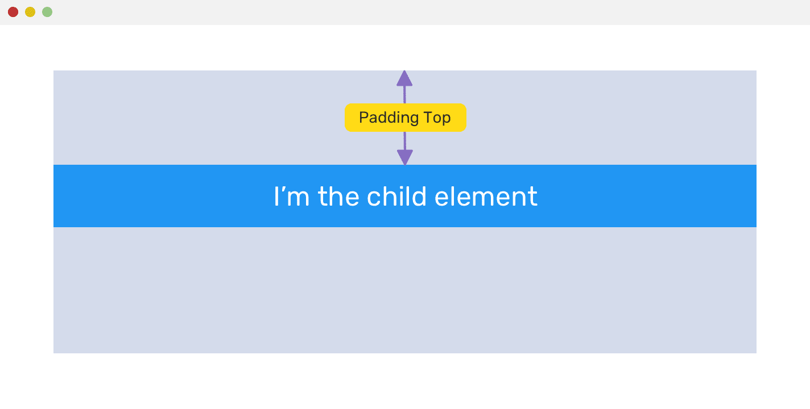
Настройка верхнего внутреннего отступа родительского элемента
Отрицательное значение можно использовать для любых внешних отступов. В некоторых случаях этот приём оказывается весьма полезным. Взглянем на следующий рисунок.
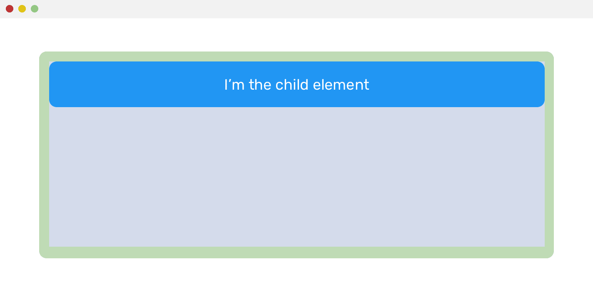
Результаты настройки свойства padding родительского элемента
У родительского элемента имеется свойство padding: 1rem. Это приводит к тому, что у дочернего элемента появляются смещения сверху, слева и справа. Но дочерний элемент должен прилегать к границам родительского элемента. Добиться этого помогут отрицательные внешние отступы.
.parent {
padding: 1rem
}
.child {
margin-left: -1rem;
margin-right: -1rem;
margin-top: -1rem;
}
Вот что получилось в результате такой стилизации.
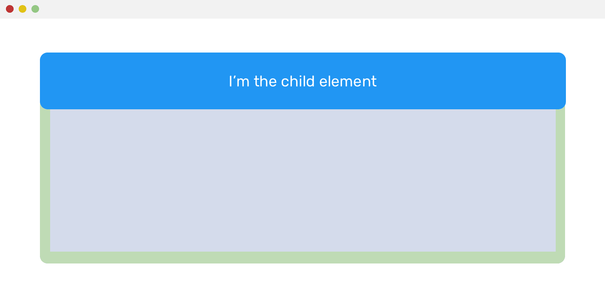
Отрицательные внешние отступы дочернего элемента помогают добиться желаемого эффекта
→ Вот демонстрация
Если тема отрицательных внешних отступов вам интересна — рекомендую эту статью.
Как уже было сказано, свойство padding позволяет управлять пространством внутри элемента. Цель применения этого свойства зависит от того, в какой ситуации оно используется.
Например, его можно использовать для увеличения пространства вокруг ссылок. Это приводит к увеличению кликабельного пространства ссылок.
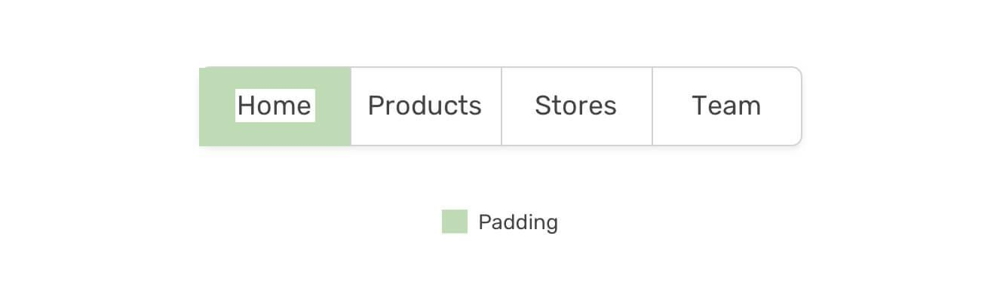
Зелёным цветом выделен внутренний отступ
Важно отметить, что вертикальные внутренние отступы не работают с элементами, имеющими свойство display: inline. Например, это элементы <span> и <a>. Если настроить свойство padding такого элемента, такая настройка на данный элемент не подействует. Это — всего лишь дружеское напоминание о том, что у inline-элементов нужно менять свойство display:
.element span {
display: inline-block;
padding-top: 1rem;
padding-bottom: 1rem;
}
В модели CSS Grid можно легко настраивать расстояние между столбцами и строками, используя свойство grid-gap. Это — сокращённое название свойства, задающего расстояния между столбцами и строками.
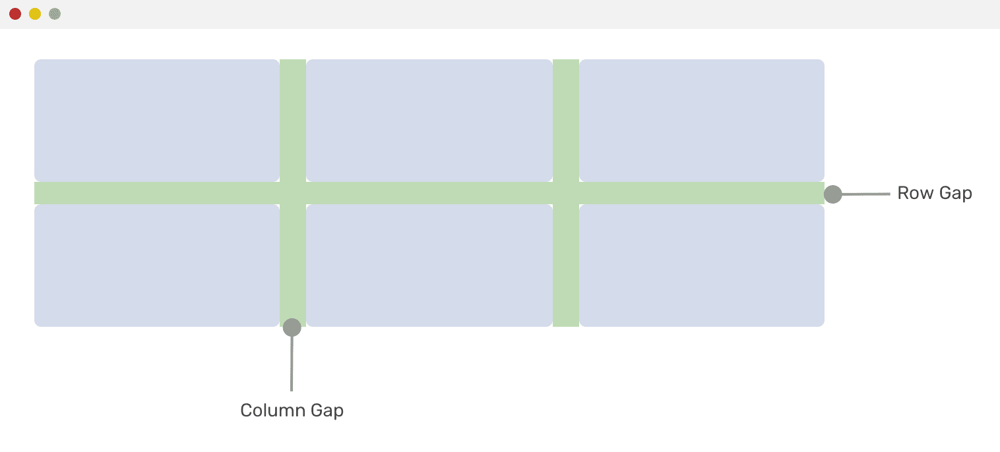
Расстояния между столбцами и строками
.element {
display: grid;
grid-template-columns: 1fr 1fr;
grid-gap: 16px; /* Добавляет расстояние в 16px для строк и столбцов */
}
Полная запись этих свойств выглядит так:
.element {
display: grid;
grid-template-columns: 1fr 1fr;
grid-row-gap: 24px;
grid-column-gap: 16px;
}
Есть одно свойство, предложенное для Grid- и Flexbox-макетов. Это — свойство gap. В настоящее время его поддерживает лишь Firefox.
.element {
display: flex;
flex-wrap: wrap;
gap: 16px;
}
Более того, это свойство нельзя использовать с CSS @supports для определения того, поддерживается ли оно, и для принятия соответствующих решений, основываясь на этом. Если это свойство вам нравится — голосуйте за добавление его в Chrome.
Возможно, позиционирование элементов нельзя напрямую отнести к способам настройки расстояния между ними, но в некоторых случаях позиционирование играет определённую роль. Например, если есть абсолютно позиционированный дочерний элемент, который нужно расположить в 16px от левого и верхнего краёв родительского элемента.
Рассмотрим следующий пример. Есть карточка, на которой имеется иконка, которую нужно расположить на некотором расстоянии от верхнего и левого краёв родительского элемента. Для достижения этого эффекта можно воспользоваться следующим стилем:
.category {
position: absolute;
left: 16px;
top: 16px;
}
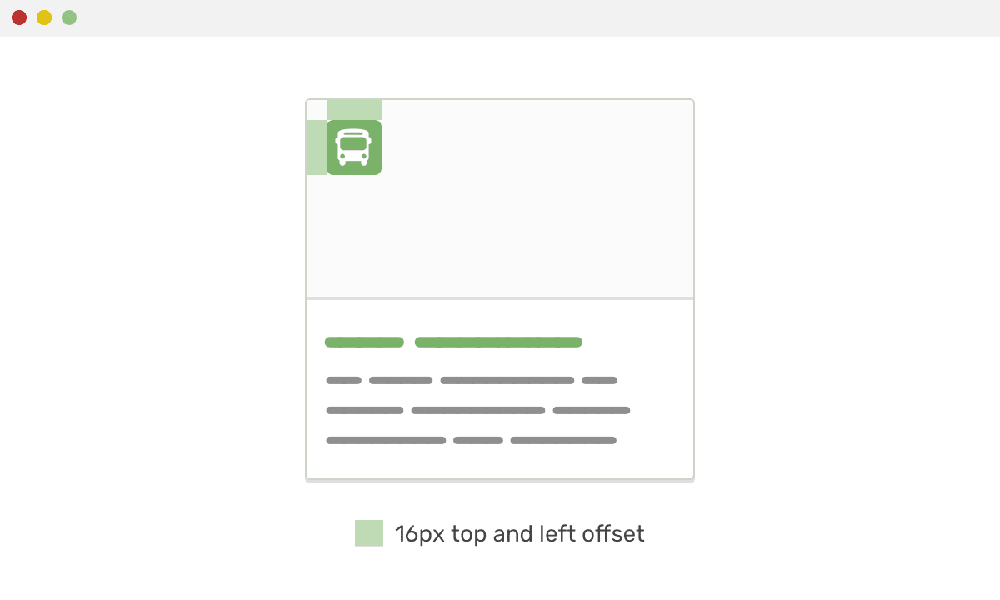
Зелёным выделено расстояние между границами родительского и дочернего элементов
В этом разделе мы рассмотрим сценарии использования средств настройки расстояний между элементами. Нечто подобное вполне может встретиться вам в повседневной работе с CSS.
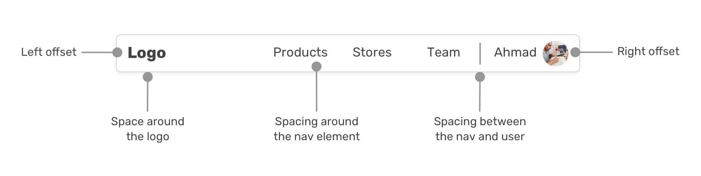
Компонент — заголовок, у которого настроено следующее: отступ слева и справа, пространство вокруг логотипа, пространство вокруг навигационного элемента, расстояние между навигационным элементом и именем пользователя
В данном случае в компоненте-заголовке имеется логотип, область навигации, и область, в которой выводятся сведения о профиле пользователя. Можете догадаться о том, как должен выглядеть код стилизации такого элемента? Вот, чтобы было легче, схематичная разметка такого элемента:
<header class="c-header">
<h1 class="c-logo"><a href="#">Logo</a></h1>
<div class="c-header__nav">
<nav class="c-nav">
<ul>
<li><a href="#">...</a></li>
</ul>
</nav>
<a href="#" class="c-user">
<span>Ahmad</span>
<img class="c-avatar" src="shadeed.jpg" alt="">
</a>
</div>
</header>
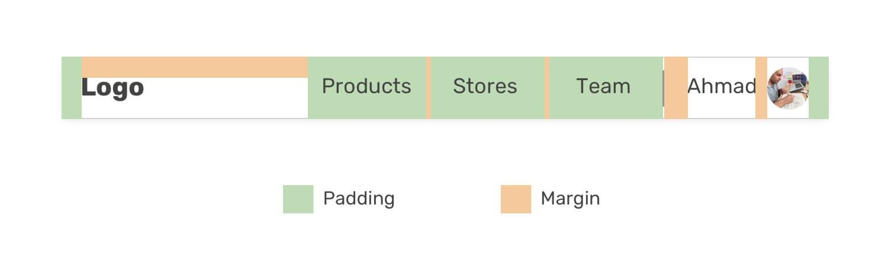
Внутренние и внешние отступы
Слева и справа используются внутренние отступы. Их цель заключается в том, чтобы содержимое заголовка не прижималось бы к его краям.
.c-header {
padding-left: 16px;
padding-right: 16px;
}
При настройке навигационных ссылок нужно учитывать то, что у каждой из них должно быть достаточно внутреннего пространства по вертикали и по горизонтали. Благодаря этому их кликабельная область будет достаточно большой, что улучшит доступность проекта.
.c-nav a {
display: block;
padding: 16px 8px;
}
Если же говорить о расстоянии между элементами, то тут можно использовать свойство margin, либо — можно изменить свойство display элементов <li> на inline-block. Благодаря этому добавляется небольшое пространство между элементами, лежащими на одном уровне, из-за того, что такие элементы рассматриваются как символы.
.c-nav li {
/* Благодаря этому созданы те пространства, которые видны на макете */
display: inline-block;
}
И наконец, у имени пользователя и аватара есть левый внешний отступ.
.c-user img,
.c-user span {
margin-left: 10px;
}
Обратите внимание на то, что если вы создаёте многоязычный сайт, рекомендовано в подобной ситуации использовать логические CSS-свойства:
.c-user img,
.c-user span {
margin-inline-start: 1rem;
}
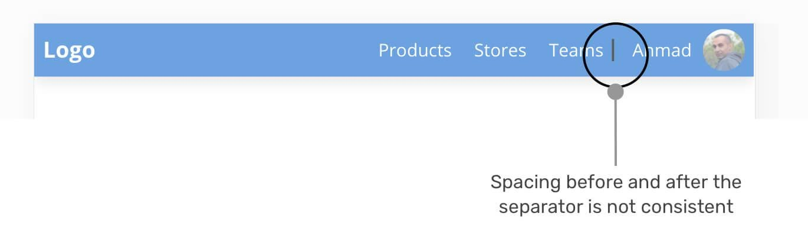
Расстояния до и после разделителя неодинаковы
Обратите внимание на то, что расстояния до и после разделителя неодинаковы. Причина этого заключается в том, что у навигационного блока не задана ширина. Вместо этого тут настроены лишь внутренние отступы. В результате ширина навигационных элементов зависит от их содержимого. Вот варианты решения этой проблемы:
Лучше и легче всего воспользоваться третьим способом, который заключается в настройке свойства margin-left:
.c-user {
margin-left: 8px;
}
→ Вот демонстрация
Сеточные макеты — это то место, где часто применяются технологии настройки расстояния между элементами. Рассмотрим следующий пример.
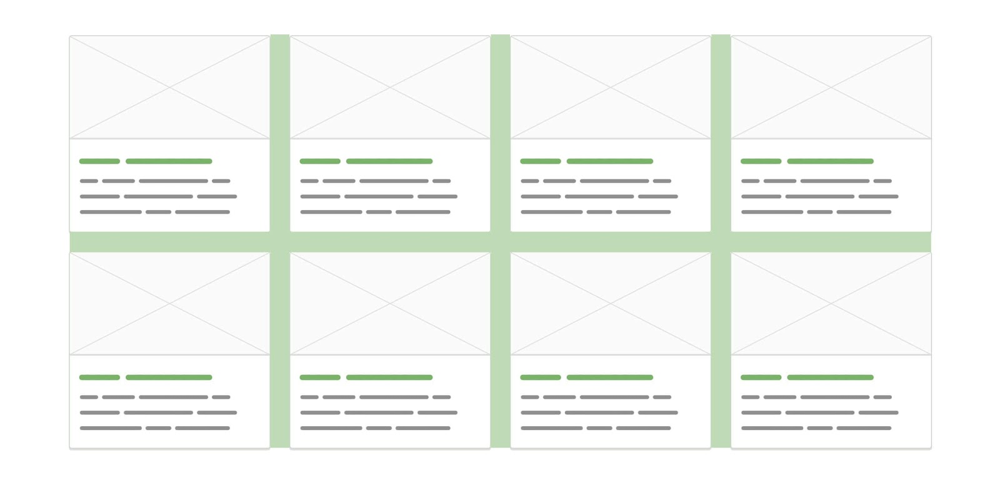
Сеточный макет
Нам нужно настроить расстояние между строками и столбцами таблицы. Вот разметка:
<div class="wrapper">
<div class="grid grid--4">
<div class="grid__item">
<article class="card"><!-- Содержимое карточки --></article>
</div>
<div class="grid__item">
<article class="card"><!-- Содержимое карточки --></article>
</div>
<!-- И так далее.. -->
</div>
</div>
Обычно я предпочитаю держать компоненты в инкапсулированном состоянии и избегаю настройки их внешних отступов. По этой причине у меня есть элемент grid_item, в котором будет располагаться элемент-карточка.
.grid--4 {
display: flex;
flex-wrap: wrap;
}
.grid__item {
flex-basis: 25%;
margin-bottom: 16px;
}
Благодаря этому CSS-коду в каждой строке будет четыре карточки. Вот один из возможных способов настройки расстояния между ними:
.grid__item {
flex-basis: calc(25% - 10px);
margin-left: 10px;
margin-bottom: 16px;
}
Благодаря использованию CSS-функции calc() внешний отступ вычитается из flex-basis. Как видите, это не такое уж и простое решение. Я, на самом деле, предпочитаю следующее:
Я узнал об этом методе много лет назад, прочитав здесь какую-то статью, название которой уже забыл (если знаете о том, что это за статья — пожалуйста дайте мне знать).
.grid--4 {
display: flex;
flex-wrap: wrap;
margin-left: -10px;
}
.grid__item {
flex-basis: 25%;
padding-left: 10px;
margin-bottom: 16px;
}
Причина, по которой я использовал здесь отрицательное значение для margin-left, заключается в том, что у первой карточки есть свойство padding-left, которое, в реальности, не нужно. В результате я перемещаю элемент-обёртку влево и избавляюсь от ненужного пространства.
→ Вот рабочий пример
Ещё одна похожая идея заключается в использовании внутренних отступов и отрицательных внешних отступов. Вот — пример с сайта Facebook.
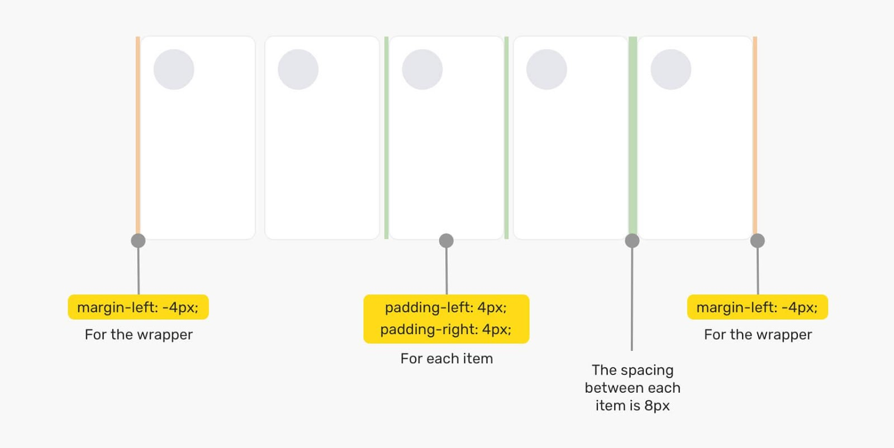
Внутренние и внешние отступы
Вот CSS-код, иллюстрирующий эту идею:
.wrapper {
margin-left: -4px;
margin-right: -4px;
}
.story {
padding-left: 4px;
padding-right: 4px;
}
А теперь — самое приятное! В макетах, основанных на CSS Grid, расстояния между элементами очень удобно настраивать, используя свойство grid-gap. Кроме того, можно не беспокоиться о ширине элементов и о нижних внешних границах. CSS Grid-макет берёт на себя заботы обо всём этом.
.grid--4 {
display: grid;
grid-template-columns: 1fr 1fr 1fr;
grid-gap: 1rem;
}
Вот и всё. Полагаю, никто не станет спорить с тем, что настройка Grid-макетов легче и понятнее, чем настройка Flexbox-макетов.
В Grid-макетах мне чрезвычайно нравится то, что свойство grid-gap применяется лишь в том случае, когда между элементами должно быть некое расстояние. Взглянем на следующий макет.
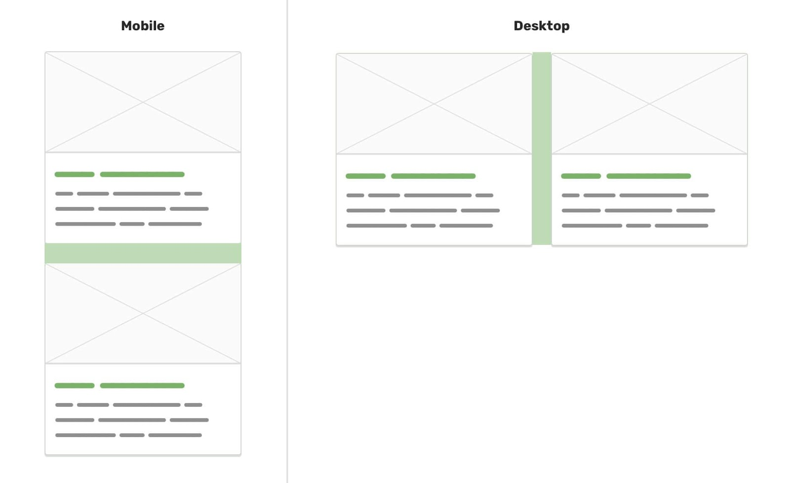
Макет сетки, в которой элементы в мобильной среде расположены вертикально, а в настольной — горизонтально
Есть раздел сайта с двумя карточками. Мне нужно, чтобы они были бы разделены и в мобильной среде, при вертикальном расположении карточек, и в настольной, при горизонтальном их расположении. Без CSS Grid такой гибкости макета достичь невозможно. Взгляните на следующий код:
.card:not(:last-child) {
margin-bottom: 16px;
}
@media (min-width: 700px) {
.card:not(:last-child) {
margin-bottom: 0;
margin-left: 1rem;
}
}
Не очень-то удобно. Правда? А как насчёт следующего стиля?
.card-wrapper {
display: grid;
grid-template-columns: 1fr;
grid-gap: 1rem;
}
@media (min-width: 700px) {
.card-wrapper {
grid-template-columns: 1fr 1fr;
}
}
Дело сделано! И устроено всё значительно проще.
Предположим, что у нас имеются следующие компоненты, расположенные друг над другом. У каждого из них настроен нижний внешний отступ.
Набор компонентов, расположенных горизонтально
Обратите внимание на то, что нижний внешний отступ имеется и у последнего элемента. А это неправильно, так как отступы должны присутствовать лишь между элементами.
Исправить эту проблему можно, прибегнув к одному из решений, которые мы сейчас разберём.
.element:not(:last-child) {
margin-bottom: 16px;
}
.element + .element {
margin-top: 16px;
}
Хотя решение №1 кажется более привлекательным, у него есть следующие недостатки:
Два столбца элементов и проблема решения №1
Если говорить о решении №2, то его применение не приводит к возникновению проблем со специфичностью. Правда, это решение тоже подходит лишь в тех случаях, когда речь идёт об одном столбце элементов.
В этой ситуации лучше всего прибегнуть к решению по удалению ненужного пространства путём добавления отрицательного внешнего отступа к родительскому элементу:
.wrapper {
margin-bottom: -16px;
}
Здесь происходит следующее. Благодаря такой настройке элемент смещается вниз на расстояние, равное заданному внешнему отступу. Но тут следует проявлять осторожность и не задать такой внешний отступ при использовании которого элементы бы перекрылись.
Теперь хочу подробно обсудить настройки компонентов-карточек. Возможно, в итоге у меня получится целая книга об этом. Здесь же я рассмотрю универсальный паттерн настройки карточек и расскажу о том, как ими управлять.
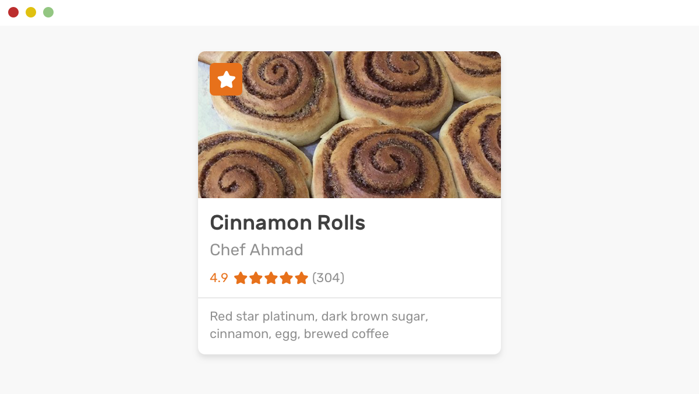
Компонент-карточка (если вам захотелось есть — извиняюсь)
Подумайте о том, где именно в этой карточке используется настройка расстояний между элементами и их частями. Вот мой ответ на этот вопрос.
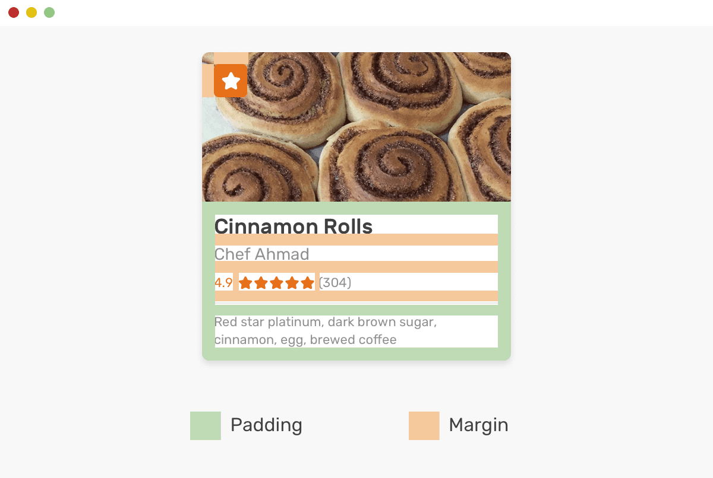
Внутренние и внешние отступы
Вот разметка:
<article class="card">
<a href="#">
<div class="card__thumb"><img src="food.jpg" alt=""></div>
<div class="card__content">
<h3 class="card__title">Cinnamon Rolls</font></h3>
<p class="card__author">Chef Ahmad</p>
<div class="card__rating"><span>4.9</span></div>
<div class="card__meta"><!-- --></div>
</div>
</a>
</article>
Вот стиль класса card__content:
.card__content {
padding: 10px;
}
Благодаря установленному здесь внутреннему отступу будет настроено смещение для всех дочерних элементов. Затем настраиваем внешние отступы:
.card__title,
.card__author,
.card__rating {
margin-bottom: 10px;
}
Настраивая разделение оценки и сведений, я использовал границу:
.card__meta {
padding-top: 10px;
border-top: 1px solid #e9e9e9;
}
Но тут мы сталкиваемся с проблемой! Граница не привязана к краям, что происходит из-за того, что у родительского элемента с классом card__content настроен внутренний отступ.
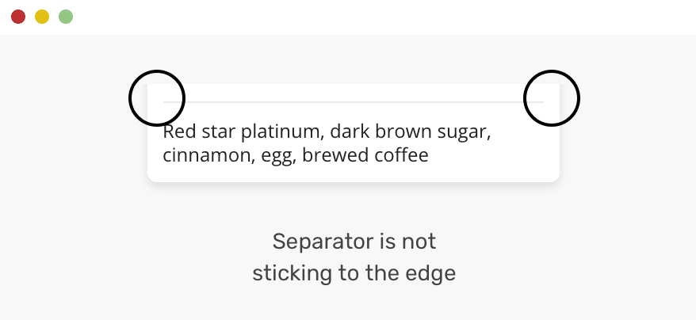
Разделитель не привязан к краю
Вы, пожалуй, уже догадались о том, что нам тут помогут отрицательные отступы:
.card__meta {
padding-top: 10px;
border-top: 1px solid #e9e9e9;
margin: 0 -10px;
}
Но и тут снова что-то пошло не так. Теперь текст прилип к краю карточки.
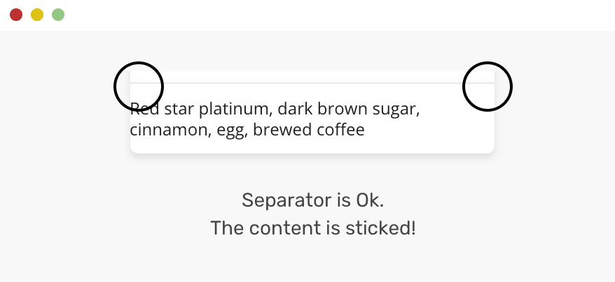
Разделитель в норме, но содержимое карточки расположено неправильно
Для того чтобы решить эту проблему, нужно настроить левый и правый внутренние отступы для содержимого карточки.
.card__meta {
padding: 10px 10px 0 10px;
border-top: 1px solid #e9e9e9;
margin: 0 -10px;
}
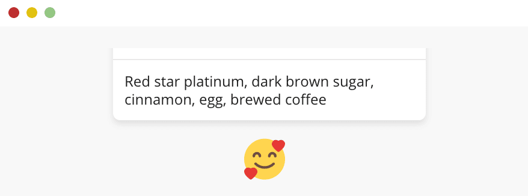
Карточка настроена так, как нужно
→ Вот пример
Я уверен в том, что то, о чём мы будем тут говорить, представляет собой очень и очень сильно распространённую ситуацию. Дело тут в том, что содержимое статей обычно поступает на страницы из CMS (Content Management System — система управления контентом), или генерируется автоматически на основе Markdown-файлов. Здесь нельзя указывать классы элементов.
Рассмотрим следующий пример, в котором представлена разметка, содержащая смесь из заголовков, абзацев и изображений.
<div class="wrapper">
<h1>Spacing Elements in CSS</h1>
<p><!-- content --></p>
<h2><font color="#3AC1EF">Types of Spacing</font></h2>
<img src="spacing-1.png" alt="">
<p><!-- content --></p>
<p><!-- content --></p>
<h2><font color="#3AC1EF">Use Cases</font></h2>
<p><!-- content --></p>
<h3><font color="#3AC1EF">▍Card Component</font></h3>
<img src="use-case-card-2.png" alt="">
</div>
Для того чтобы привести это всё к приличному виду, расстояния между элементами должны быть единообразными и должны использоваться ответственно. Работая над данным примером я позаимствовал некоторые стили с type-scale.com.
h1, h2, h3, h4, h5 {
margin: 2.75rem 0 1.05rem;
}
h1 {
margin-top: 0;
}
img {
margin-bottom: 0.5rem;
}
Вот схема страницы с текстом статьи.
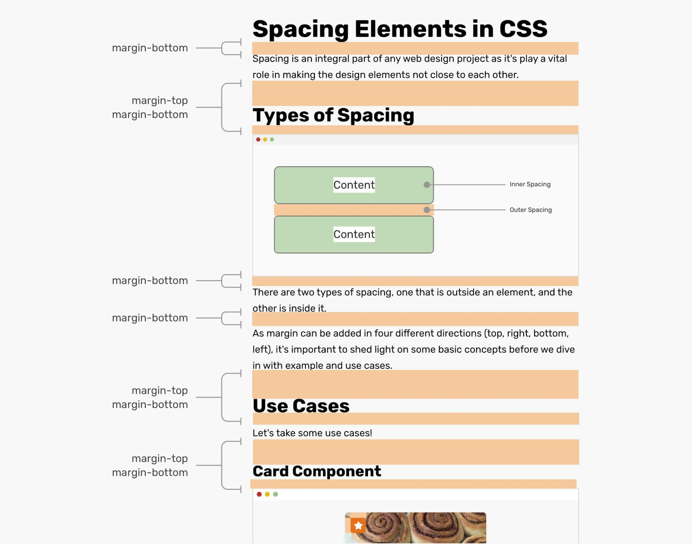
Схема страницы и применение свойств margin-top и margin-bottom
Если за элементом <p> следует заголовок, например — заголовок Types of Spacing, то свойство margin-bottom элемента <p> будет проигнорировано. Это, как вы можете догадаться, является следствием схлопывания внешних отступов.
→ Вот пример
Взгляните на следующий макет.
Элементы в нормальном состоянии и в ситуации нехватки места
Элементы не очень хорошо выглядят в том случае, когда они находятся друг к другу слишком близко. Я создал этот макет с использованием Flexbox. Эта методика называется «Alignment Shifting Wrapping» (Выравнивание Сдвиг Перенос). Я узнал о её названии отсюда.
.element {
display: flex;
flex-wrap: wrap;
}
В результате применения этой методики осуществляется перенос строк в том случае, если область просмотра меньше определённого предела. Вот как это выглядит.
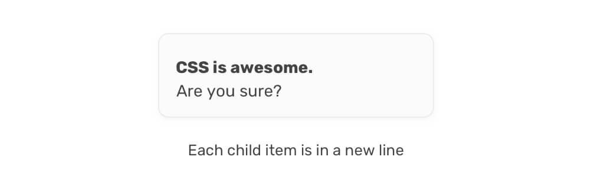
Дочерние элементы находятся на новых строках
Здесь нужно разобраться с промежуточной ситуацией, в которой два элемента всё ещё находятся рядом друг с другом, но расстояние между ними равно нулю. В таком случае я предпочитаю прибегать к свойству margin-right, что не даёт элементам касаться друг друга и ускоряет срабатывание flex-wrap.
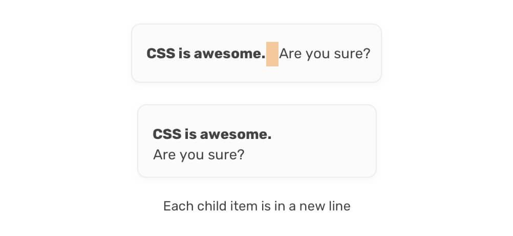
Элементы не касаются друг друга
Сначала процитируем MDN: «Свойство writing-mode устанавливает горизонтальное или вертикальное положение текста, а также — направление блока».
Размышляли когда-нибудь о том, как должны вести себя внешние отступы в том случае, когда они используются с элементом, свойство writing-mode которого отличается от стандартного? Рассмотрим следующий пример.
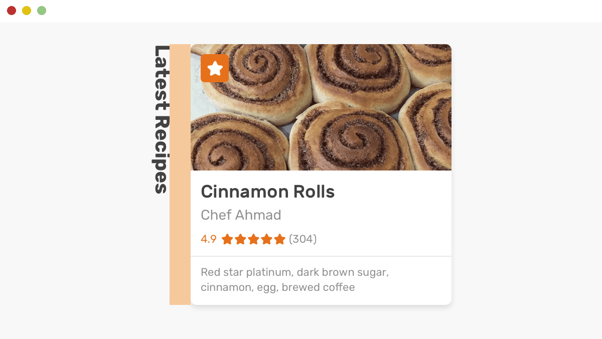
Карточка с вертикальным заголовком
Вот стили:
.wrapper {
/* Для того чтобы заголовок и карточка рецепта были бы расположены на одной строке */
display: flex;
}
.title {
writing-mode: vertical-lr;
margin-right: 16px;
}
Заголовок повёрнут на 90 градусов. Между ним и изображением должно быть пустое пространство. Как оказалось, свойство margin-right отлично показывает себя при разных значениях свойства writing-mode.
→ Вот пример
Полагаю, мы рассмотрели достаточно сценариев использования отступов. Теперь рассмотрим некоторые интересные концепции.
В больших дизайн-системах содержится множество компонентов. Логично ли будет настраивать их внешние отступы?
Рассмотрим следующий пример.
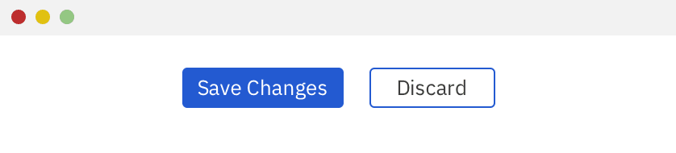
Кнопки
<button class="button">Save Changes</button>
<button class="button button-outline">Discard</button>
Где нужно настраивать расстояния между кнопками? Нужно ли настраивать какие-то свойства левой или правой кнопки? Может, можно воспользоваться комбинацией соседних элементов одного уровня?
.button + .button {
margin-left: 1rem;
}
Ничего хорошего в этом нет. А что если имеется лишь одна кнопка? А как это будет работать на мобильном устройстве, в том случае, когда кнопки расположены по вертикали, а не по горизонтали? В общем, тут перед нами встаёт множество сложных вопросов.
Решением вышеозначенных проблем является применение абстрагированных компонентов, которые используются для размещения в них других компонентов. Это, как сказано здесь, что-то вроде перемещения ответственности за управление отступами на родительский элемент. Переосмыслим предыдущий пример в свете этой идеи.
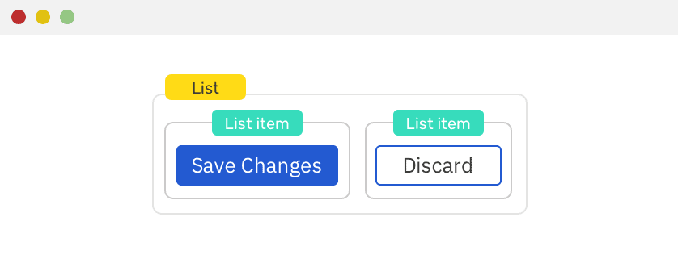
Родительские и дочерние компоненты
<div class="list">
<div class="list__item">
<button class="button">Save Changes</button>
</div>
<div class="list__item">
<button class="button button-outline">Discard</button>
</div>
</div>
Обратите внимание на то, что тут присутствуют элементы-обёртки. Каждая кнопка обладает собственной обёрткой.
.list {
display: flex;
align-items: center;
margin-left: -1rem; /* Убирает левый внешний отступ первого элемента */
}
.list__item {
margin-left: 1rem;
}
Вот и всё! И более того — эту концепцию легко применить к любому JavaScript-фреймворку. Например:
<List>
<Button>Save Changes</Button>
<Button outline>Discard</Button>
</List>
А используемый JS-инструмент должен поместить каждый элемент в собственную обёртку.
Если вы сомневаетесь в том, что прочли заголовок правильно — не сомневайтесь. Речь идёт о компонентах, используемых в качестве разделителей. В частности, тут я ссылаюсь на эту статью, в которой обсуждается концепция, в соответствии с которой избегают использования внешних отступов и применяют вместо них компоненты-разделители.
Представим, что в некоем разделе сайта нужен левый внешний отступ размером 24px. При этом к отступу выдвигаются следующие требования:
Я впервые заметил этот приём, исследуя новый дизайн Facebook.
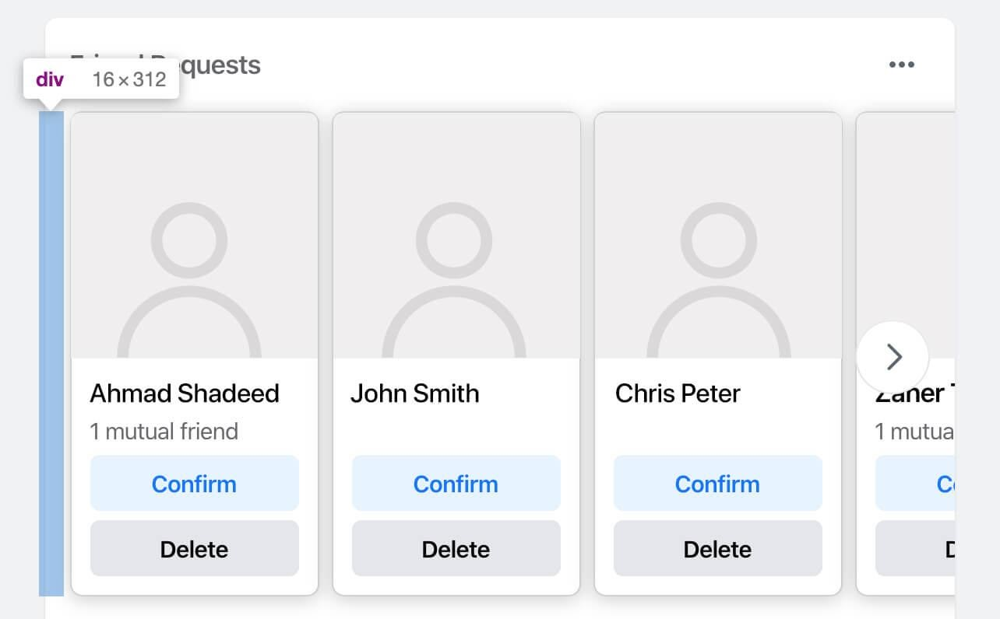
Элемент-разделитель в дизайне Facebook
Здесь в качестве элемента-разделителя используется <div> с встроенным стилем width: 16px. Его единственная цель — добавление пустого пространства между левым элементом и элементом-контейнером.
Вот цитата из данной методички по React: «Но в реальном мире мы нуждаемся в пространствах, задаваемых за пределами компонентов, для компоновки компонентов в страницы и сцены. Именно здесь настройки внешних отступов и пробираются в код компонентов для настройки расстояний между компонентами при их компоновке».
Я с этим согласен. В большой дизайн-системе нерациональным будет добавление к компонентам внешних отступов. Это, в результате, приведёт к не очень хорошо выглядящему коду.
Теперь, когда вы ознакомились с идеей компонентов-разделителей, давайте поговорим о некоторых проблемах, вполне ожидаемых, которые могут возникнуть при работе с ними. Вот вопросы об этом, над которыми я размышлял:
Разберём эти вопросы.
Можно создать компонент-разделитель, принимающий различные параметры. Я — не JavaScript-разработчик, но думаю, что это то, что называется «свойствами» (props). Рассмотрим следующий пример, взятый отсюда.
Имеется компонент-разделитель, расположенный между компонентами Header и Section.
<Header />
<Spacer mb={4} />
<Section />
А вот — несколько иная ситуация. Тут разделитель используется для создания автоматически настраиваемого расстояния между логотипом (компонентом Logo) и областью навигации, представленной компонентами Link.
<Flex>
<Logo />
<Spacer m="auto" />
<Link>Beep</Link>
<Link>Boop</Link>
</Flex>
Может показаться, что реализовать такой разделитель средствами CSS очень просто, и что для этого достаточно воспользоваться конструкцией justify-content: space-between. Но что если дизайн понадобится поменять? В таком случае придётся менять стилизацию.
Взгляните на следующий пример. Выглядит ли этот код гибким?
<Flex>
<Logo />
<Link>Beep</Link>
<Link>Boop</Link>
<Spacer m="auto" />
<Link>Boop</Link>
</Flex>
В этом случае стилизация нуждается в изменении.
В том, что касается размеров, можно сказать, что размер разделителя может быть настроен на основе размеров родительского элемента. В вышеприведённом случае, возможно, есть смысл создать свойство grow, которое в CSS устанавливается в значение flex-grow: 1.
<Flex>
<Spacer grow="1" />
</Flex>
Ещё одна идея, которая пришла мне в голову, заключается в использовании псевдоэлементов для создания разделителей.
.element:after {
content: "";
display: block;
height: 32px;
}
Может быть, у нас есть возможность сделать разделителем псевдоэлемент, а не использовать для этого отдельный элемент? Например:
<Header spacer="below" type="pseudo" length="32">
<Logo />
<Link>Home</Link>
<Link>About</Link>
<Link>Contact</Link>
</Header>
До сих пор я не пользовался компонентами-разделителями в своих проектах. Но я ищу сценарии, в которых они могли бы мне пригодиться.
Можно ли сделать отступы динамическими? Например, можно ли воспользоваться таким отступом, минимальный и максимальный размер которого зависит от ширины области просмотра? Я могу ответить на этот вопрос положительно. CSS-функции, в соответствии с данными CanIUse, поддерживаются всеми ведущими браузерами.
Вспомним о Grid-макетах и поговорим о том, как в них может использоваться динамическая настройка отступов.
.wrapper {
display: grid;
grid-template-columns: repeat(3, 1fr);
grid-gap: min(2vmax, 32px);
}
Конструкция min(2vmax, 32px) означает следующее: использовать расстояние, равное 2vmax, но не превышающее 32px.
→ Вот видеодемонстрация такого макета
→ Вот пример.
Такая гибкость поистине удивительна. Она даёт нам множество возможностей по созданию динамических и гибких макетов веб-страниц.